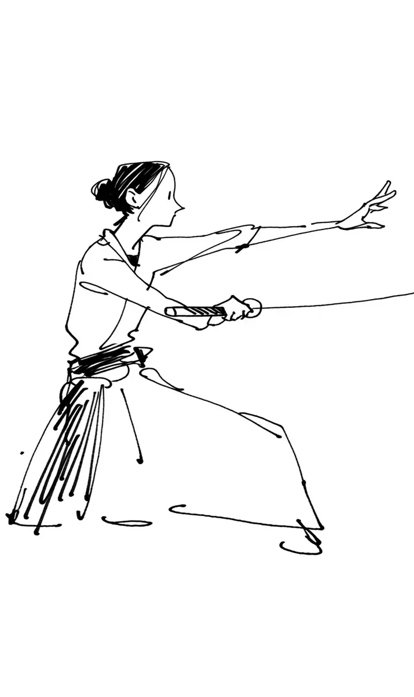

칼끝이 김치통을 겨눴다. 세라는 숨을 멈췄다. 통은 거실 한가운데에 놓여 있었고, 그 뚜껑은 삼 년째 아무에게도 열리지 않았다. 아버지 오태식은 소파에 앉아 만 원짜리 한 장을 흔들었다. “세 번 안에 못 열면 내 돈이다.” 어머니 정미경은 팔짱을 낀 채 웃지 않았다. 그 김치는 두 사람이 같이 담근 것이었다.
[The blade tip aimed at the kimchi container. Sera held her breath. The container sat in the middle of the living room, and for three years its lid had opened for no one. Her father Oh Taesik sat on the sofa, waving a ten thousand won note. “If you cannot open it in three tries, the money is mine.” Her mother Jung Mikyung stood with her arms crossed and did not laugh. The two of them had made that kimchi together.]
첫 번째 시도. 세라는 기합을 넣고 손목을 비틀었다. 뚜껑은 꿈쩍도 하지 않았다. 두 번째 시도에서는 통이 미끄러져 티비 다리를 쳤고, 아버지는 박수를 쳤다. 세라는 자세를 바꿨다. 왼발을 뒤로 빼고, 오른손에 힘을 모으고, 사극에서 본 대로 팔을 길게 뻗었다.
[First attempt. Sera let out a shout and twisted her wrist. The lid did not budge. On the second attempt the container slid and knocked the leg of the TV, and her father clapped. Sera changed her stance. She pulled her left foot back, gathered strength into her right hand, and stretched her arm out long, the way she had seen in historical dramas.]
“기다려.” 어머니가 조용히 말했다. 하지만 세라는 이미 숨을 들이마신 뒤였다. 뚜껑이 드디어 끼익 소리를 내며 돌아갔고, 온 집안이 잠깐 조용해졌다. 아버지는 만 원짜리를 탁자에 내려놓으며 웃었다. 세라는 칼을 내리고 어깨를 폈다. 승리였다. 그리고 냄새가 거실을 건넜다. 아버지가 먼저 창문으로 뛰었고, 세라는 눈물을 흘리며 뒤로 물러났다. 어머니만 그대로 앉아 있었다.
[”Wait,” her mother said quietly. But Sera had already drawn in her breath. The lid finally turned with a creak, and for a moment the whole house went silent. Her father laughed and set the ten thousand won note down on the table. Sera lowered her sword and squared her shoulders. It was a victory. Then the smell crossed the living room. Her father ran for the window first, and Sera backed away with tears running down her face. Only her mother stayed sitting where she was.]
“그건 김치가 아니라 삼 년 묵은 젓갈이야.”
[”That is not kimchi. That is three year old salted seafood.”]